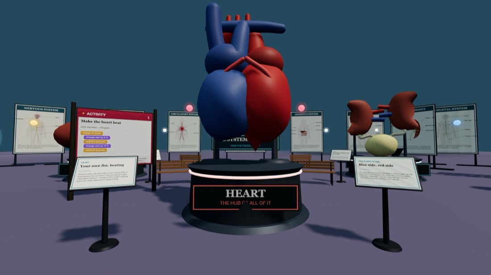
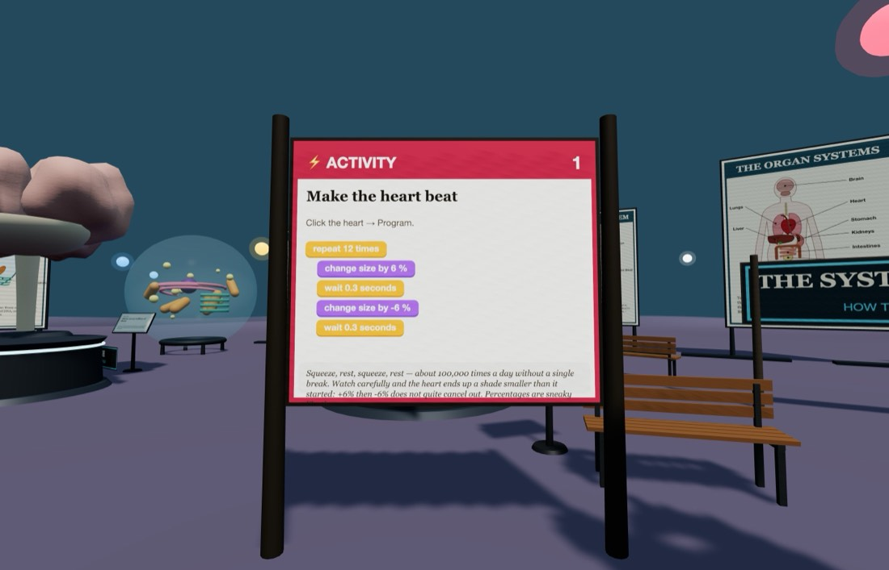
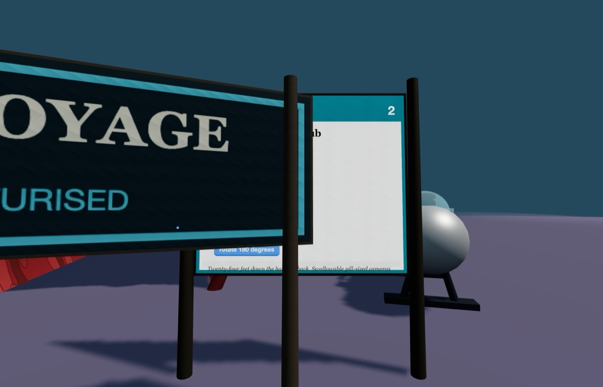

🫀 Fantastic Voyage
You have been shrunk. Walk in along an artery and out into a hall of organs the size of cars.
Getting there: open Edusim, tap ☰ Menu → Load World → Fantastic Voyage. You will be set down at the front gate. Look for the bright ⚡ ACTIVITY boards — there are two of them.



Quick starts — do these first
Both of these are printed on boards inside the world too, so you can leave this card at home. Click the object, choose Program, drag the blocks together in this order, then press Save.
Make the heart beat
Click the heart → Program
- repeat 12 times
- change size by 6 %
- wait 0.3 seconds
- change size by -6 %
- wait 0.3 seconds
💡 Squeeze, rest, squeeze, rest — about 100,000 times a day without a break. Watch closely and the heart ends a shade smaller than it started: +6% then −6% does not quite cancel out. Percentages are sneaky.
Launch the micro-sub
Click the submarine → Program
- forever
- repeat 30 times
- move Z by -0.8 feet
- rotate 180 degrees
- repeat 30 times
- move Z by 0.8 feet
- rotate 180 degrees
💡 Twenty-four feet down the hall and back. Swallowable pill-sized cameras have been doing the real version of this trip since 2001 — no crew, but a very long journey.
Then try these three
-
Resting pulse vs. running pulse
A resting heart beats 60–100 times a minute. Work out the wait that gives exactly 70 beats a minute, then double the rate for someone sprinting. (Hint: one beat is two waits.)
- forever
- change size by 6 %
- wait 0.43 seconds
- change size by -6 %
- wait 0.43 seconds
-
Breathe
Give the lungs the same treatment as the heart, but slower — you breathe about 12–20 times a minute, not 70. Run both at once and listen to the rhythm they make together.
- forever
- change size by 5 %
- wait 1.5 seconds
- change size by -5 %
- wait 1.5 seconds
-
Blood on the move
Send the red blood cells drifting down the artery you walked in through. Real ones make the whole circuit of your body in about a minute.
- forever
- repeat 30 times
- move Z by -0.5 feet
- wait 0.05 seconds
- repeat 30 times
- move Z by 0.5 feet
- wait 0.05 seconds
Block colours
- Control — repeat, forever, wait, duplicate
- Motion — move X / Y / Z, rotate
- Looks — change size, change colour
One rule that catches everybody: move X, move Y and move Z slide an object along the world's directions, not the direction it happens to be facing. Turning something does not change which way it will then travel — that is why the loops above go out and come back rather than driving in a circle.